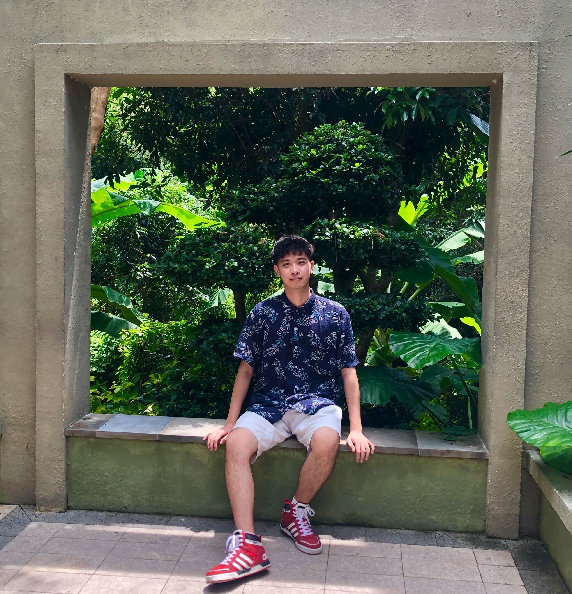
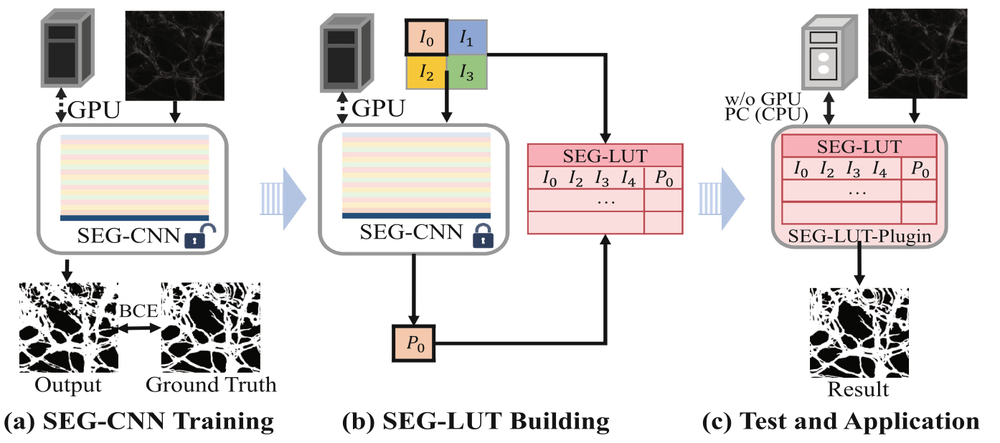
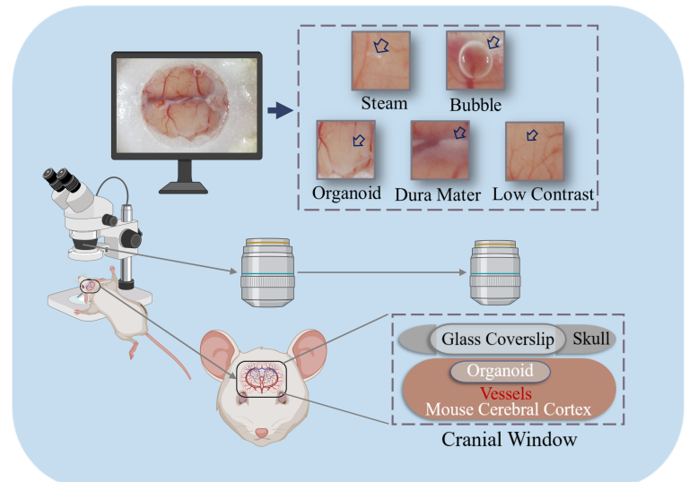

Yunheng Wu (오 운항)박사과정 학생
지능시스템전공 Email | Google Scholar | Github | LinkedIn |
|
 |
소개
저는 나고야대학교 정보과학연구과 지능시스템전공 박사과정 3학년 학생이며, 나고야대학교의 모리 켄사쿠 교수님의 지도 아래 연구하고 있습니다. 그 전에 저는 2019년에 중국 동북대학교의 컴퓨터과학 및 기술학부에서 공학 학사 학위를 받았고, 2023년에는 나고야대학교 정보과학연구과에서 정보학 석사 학위를 취득하였습니다.
저는 생물의학 영상 처리 분야에 집중하고 있습니다.
컴퓨터 비전 관련 흥미로운 주제나 질문이 있다면, 언제든지 이메일로 연락 주세요!
새 소식
-
[2024년 7월] MICCAI 2024 워크숍 - Medical Optical Imaging and Virtual Microscopy Image Analysis (MOVI)에 저희의 두 편의 논문이 채택되었습니다!
-
[2024년 4월] 일본학술진흥회(JSPS) 박사과정 연구원(DC2)으로 새 직책을 시작했습니다.
대표 논문

|
International Conference on Medical Image Computing and Computer-Assisted Intervention, MICCAI Workshop, 2024 Yuheng Wu, Martin J. Menten, Linus Kreitner, Shuntaro Kawamura, Masahiro Oda, Yuichiro Hayashi, Takanori Takebe,Daniel Rueckert, and Kensaku Mori [Paper] [Code and Dataset] Key Words: Confocal Microscopic Volume; 3D Vasculature Simulation and Synthesis; 3D Volume Reconstruction |
|

|
International Conference on Medical Image Computing and Computer-Assisted Intervention, MICCAI Workshop, 2024 Yuheng Wu, Yunheng Wu1(B), Jiazhen Pan, Shuntaro Kawamura, Masahiro Oda, Yuichiro Hayashi, Takanori Takebe, Daniel Rueckert and Kensaku Mori [Paper] [Code and Dataset] Key Words: Microscopic Image, Image Segmentation, Look-Up Table |
|

|
Conference on Computer Vision and Pattern Recognition, CVPR Workshop, 2022 Yuheng Wu, Masahiro Oda, Yuichiro Hayashi, Takanori Takebe, Shogo Nagata, Cheng Wang, Kensaku Mori [Paper] Key Words: Cranial Window; Wide-Field Optical Microscopic Images; Blood Vessel Segmentation |
기타 논문
-
In toto biological framework: Modeling interconnectedness during human development[Paper]
Yosuke Yoneyama, Yunheng Wu, Kensaku Mori, Takanori Takebe
Developmental Cell, Volume 60, Issue 1, 8 - 20, January 06, 2025
-
Complement factor D targeting protects endotheliopathy in organoid and monkey models of COVID-19[Paper]
Eri Kawakami, Norikazu Saiki, Yosuke Yoneyama, Chiharu Moriya, Mari Maezawa, Shuntaro Kawamura, Akiko Kinebuchi, Tamaki Kono, Masaaki Funata, Ayaka Sakoda, Shigeru Kondo, Takeshi Ebihara, Hisatake Matsumoto, Yuki Togami, Hiroshi Ogura, Fuminori Sugihara, Daisuke Okuzaki, Takashi Kojima, Sayaka Deguchi, Sebastien Vallee, Susan McQuade, Rizwana Islam, Madhusudan Natarajan, Hirohito Ishigaki, Misako Nakayama, Cong Thanh Nguyen, Yoshinori Kitagawa, Yunheng Wu, Kensaku Mori, Takayuki Hishiki, Tomohiko Takasaki, Yasushi Itoh, Kazuo Takayama, Yasunori Nio, Takanori Takebe
Cell Stem Cell, Volume 30, issue 10, p1315-1330.E10, October 05, 2023
-
Thrombosis region extraction and quantitative analysis in confocal laser scanning microscopic image sequence in in-vivo imaging [Paper]
Yunheng Wu, Masahiro Oda, Yuichiro Hayashi, Shuntaro Kawamura, Takanori Takebe, Kensaku Mori.
In Medical Imaging 2023: Biomedical Applications in Molecular, Structural, and Functional Imaging (Vol. 12468, pp. 71-77). SPIE.
-
A 3D Multi-scale Virtual Adversarial Network for False Positive Reduction in Pulmonary Nodule Detection [Paper]
Yunheng Wu, Yuxuan Pang, Peng Cao.
Proceedings of the 2019 3rd ICIAI, 2019
학력
- 일본 나고야대학교 정보학대학원 지능시스템전공, 나고야, 일본, 2023년 4월 – 현재
박사과정 재학 중
지도교수: Kensaku Mori 교수
- 일본 나고야대학교 정보학대학원 지능시스템전공, 나고야, 일본, 2021년 4월 – 2023년 3월
석사과정 (정보학 석사 학위 취득)
지도교수: Kensaku Mori 교수
- 일본 나고야대학교 정보학부, 나고야, 일본, 2020년 4월 – 2021년 3월
연구생 (비학위 과정)
지도교수: Kensaku Mori 교수
- 대한민국 경희대학교 전자공학과, 수원, 한국, 2017년 8월 – 2018년 1월
교환학생 (비학위 과정)
- 중국 동북대학교 컴퓨터과학기술학부, 선양, 중국, 2015년 10월 – 2019년 6월
학부과정 (공학 학사 학위 취득)
경력
- UCL 의료 영상 컴퓨팅 하계 학교 (MedICSS), 런던, 영국, 2024년 7월
하계 학교 학생
프로젝트 5: 딥러닝을 활용한 자기공명영상(MRI) 잡음 제거
- The Lab of AI in Medicine, 독일 뮌헨 공과대학교 의학 인공지능 연구소, 뮌헨, 독일, 2023년 8월 – 2023년 11월
객원 연구원
지도교수: Daniel Rueckert 교수
- 모리 연구실, 일본 나고야대학교 정보학대학원, 나고야, 일본, 2021년 4월 – 2023년 3월
연구 조교 (파트타임)
지도교수: Kensaku Mori 교수
- 중국 동북대학교 신호 및 정보처리 연구소, 선양, 중국, 2018년 1월 – 2018년 7월
연구생
지도교수: Feng Luan 교수
- 중국 동북대학교 의료 영상 계산 중점 연구실, 선양, 중국, 2018년 1월 – 2019년 6월
연구생
지도교수: Peng Cao 교수
프로젝트
- JST 문샷 프로젝트 목표 3: 인간과 AI 로봇의 공진화를 통한 과학 프런티어 확장 (JST Moonshot Project Goal 3 Co-evolution of Human and AI-Robots to Expand Science Frontiers), 2021년 4월 – 현재
참여 학생
PM: Kanako Harada 교수
지도 교수 (PI): Kensaku Mori 교수
협력 PI: Takanori Takebe 교수
- 국가 학부생 혁신 및 창업 훈련 프로그램 (National Undergraduate Training Program for Innovation and Entrepreneurship), 2018년 1월 – 2019년 6월
프로젝트 리더
장학금 및 펠로우십
- 글로벌 협력을 통한 정보학 및 생물의학 융합 프로그램 (Convolution of Informatics and Biomedical Sciences on Glocal Alliances), 2021년 4월 – 현재
CIBoG 제3기 학생 (정보학대학원 및 의학대학원 공동)
- 나고야대학교 융합 프런티어 펠로우십 (Nagoya University interdisciplinary Frontier Fellowship)
, 2023년 4월 – 2024년 3월
정보/AI 분야
- 일본학술진흥회(JSPS) 젊은 과학자 연구펠로우십 (DC2) (Japan Society for the Promotion of Science (JSPS) Research Fellowships for Young Scientists (DC2)), 2024년 4월 – 현재
주요 수상 내역
도카 교육·문화·커뮤니케이션 재단 장학금 (Toka Education, Culture and Communication Foundation Scholarship), 2022-2023
JEES 소프트뱅크 AI 인재 양성 장학금 (JEES Softbank AI Talent Development Scholarship), 2021-2022
동북대학교 우수학생 장학금 (Northeastern University Outstanding Student Scholarship), 2018-2019
동북대학교 개인 우수 학문 성과상 (Northeastern University Personal Excellent Academic Professionals), 2017-2018
동북대학교 우수학생 장학금 (Northeastern University Outstanding Student Scholarship), 2017-2018
학술 활동
Journal of Biomedical and Health Informatics (JBHI)
Health Information Science and Systems
정보환경 및 전략에 관한 학술 교류 (AXIES2023)
제5회 글로벌 융합 생물정보학 리트릿 (CIBoG) 준비위원회
국제의료영상컴퓨팅 및 컴퓨터보조중재학회 (MICCAI)
IEEE/CVF 컴퓨터 비전 및 패턴 인식 학회 (CVPR)
국제 컴퓨터 비전 학회 (ICCV)
공동 연구자
도쿄대학교 의과학연구소 박사후연구원 (Postdoctoral researcher, The Institute of Medical Science, The University of Tokyo (IMSUT))